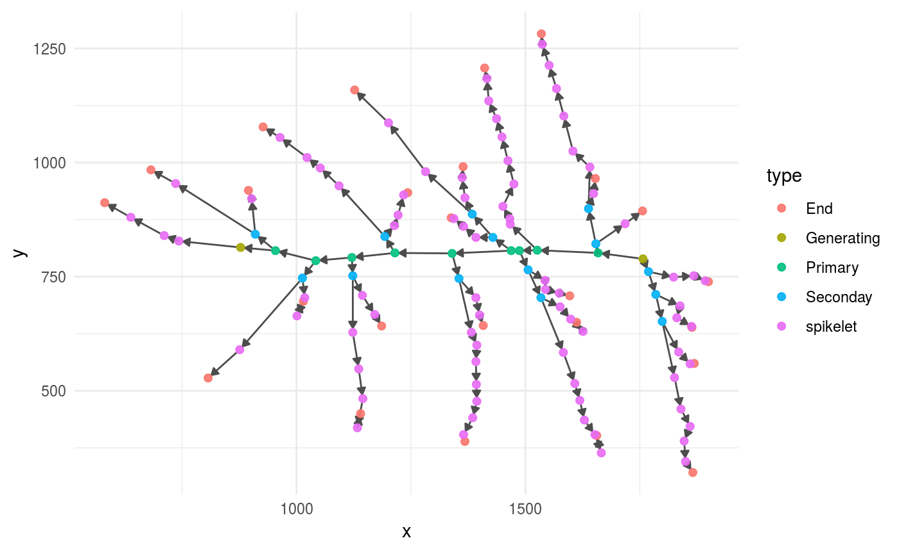

03 - Visualize The Structure of a Panicle
Otho Mantegazza
2018-12-04
03-dot-plot.RmdSetup
library(dplyr)
library(magrittr)
library(igraph)
library(ggraph)
library(ptrapr)
# ggplot2 theme minimal fits better with graphs
theme_set(theme_minimal())Intro / get data
In this Vignette you will learn how to visualize the panicle stucture, with some simple plots that highlight important features.
We provide the R object panicle which stores a panicle graph that has been already parsed in R. If you want to learn how to parse panicle XML files, please read the Vignette “Load Panicles into R”.
Access sample panicle data with:
data(good_panicle)
data(inverted_panicle)Check the direction of the edges (Branches)
Sometimes, the direction of the edges in the graphs produced with ptrap are not correct.
Every edge corrispond to the part of a branch that connect one node to another. By convention each edge should be directed outward: pointing from the node closer to the base of the panicle to the one further away.
You can understand this better by looking at the panicle graphs: we provide two panicle graph objects:
- One named
good_paniclein which every edge points outward. - One named
inverted_paniclein which the edges on the main rachis axis point inward.
We can see this comparing the graphs.
The good_panicle graph has no inverted edges:
good_panicle %>% plot_panicle()
Compare the previous graph with the one below, repersenting the inverted_panicle object. In the graph below, the edges on the main axis are inverted.
inverted_panicle %>% plot_panicle()
We suggest you to inspect your data, and if some of the edges are inverted, you can learn how to correct them in the vignette “Why and How to Invert Edges”.
Let’s continue on the good_panicle graph.
Inspect Branching with a Dot Plot
In order to visualize and inspect primary and secondary branching, we suggest you to represent your data with a tiled plot. We have learned about this representation in this paper by Fujishiro et al.. We suggest this plot because it highlights the number and position of primary and secondary branches in a direct and intuitive way.
To achieve this, first you will have to extract features from the panicle graph and put them in a data frame
Extract a data frame from the graph with panicle_tibble()
To extract data from a panicle graph and store it in a convenient dataframe, we provide the panicle_tibble() function. You can use it this way:
pan_tibble <-
good_panicle %>%
panicle_tibble()You can use the panicle_tibble() function to get a dataframe that stores three variables:
-
primary: the rank of the primary branch (the lower ranking branch are closer to base of the panicle). -
type: Along that primary branch, the identity of each node. (Secondary, Spikelet or End). -
rank: Along that primary branch, the rank of each node.